Kapitel 7 Tidsrækker og ARIMA
Gennemgangen af tidsrækkeanalyse bygger meget på praktisk anvendelighed (dvs. vi vil gerne kunne forudsige kursudviklingen), vi vil springe let hen over teorien der kan være tung og er meget omfattende. Nedenstående links giver dog en indføring i den teoretiske del, som vi her ikke berører.
http://ucanalytics.com/blogs/arima-models-manufacturing-case-study-example-part-3/
Her er en gennemgang af forskellige typer af tidsrækker man kan opleve.
https://people.duke.edu/~rnau/411arim.htm#arima010
Video om ARIMA https://youtu.be/Aw77aMLj9uM
En tidsrække er observationer, der er observeret over tid, fx. lukkekursen på Novo i 2018, kan vi beskrive som en tidsrække. Hvor vi både registrerer dato og lukkekursen. ARIMA er et avanceret analyseværktøj til at beskrive tidsrækker. Vi vil i de følgende kaptiler, med eksempler beskrive hvordan de enkelte elementer i ARIMA rent praktisk fungerer.
AR står for AutoRegressive
I står for Integrated
MA står for Moving Average
Lad i de følgende afsnit se på nogle simple eksempler for trinvis, at kunne beskrive hvorledes modellen fungerer.
7.1 ARIMA(0,0,0)
Nedenfor har vi aktiekurser for 50 dage for en fiktiv aktie, vi vil nu undersøge om disse kan bruges til at forudsige noget om fremtidige aktiekurser. For at gøre dette, skal man enten importere Excelfilen, eller copy paste data fra rammen nedenfor.
Hent ARIMA1.xlsx Excel filen her. Importer ARIMA1.xlsx til R via menuen File - Import Dataset - Excel. Nu skal datasættet rettes til en tidsserie med ts() kommandoen.
Vi kan nu plotte vore data i R.

Det er svært at se nogen tydelig udvikling i kursen.
Vi benytter auto.arima til at undersøge om der er en systematik i tidsserien, for at bruge denne funktion skal vi hente og loade pakken forecast med fx. pacman:
Funktionen auto.arima i R er en fantastisk funktion, der automatisk finder den ARIMA model, der passer bedst på observationerne.
## Series: ARIMA1
## ARIMA(0,0,0) with non-zero mean
##
## Coefficients:
## mean
## 19.8964
## s.e. 0.2872
##
## sigma^2 estimated as 4.209: log likelihood=-106.37
## AIC=216.74 AICc=217 BIC=220.57Output ARIMA(0,0,0) with non-zero mean, fortæller os at data er ligesom hvid støj. Den bedste forudsigelse af aktieprisen, vi kan komme med er gennemsnittet af alle kurserne. Vi kan altså ikke forudsige prisen vha. vore fine værktøjer.
Akaike Information Criterion (AIC) , og Bayesian Information Criterion (BIC) benyttes til at vælge ARIMA modellen med mindst AIC og BIC værdier. auto.arima finder den bedste model automatisk.
Her er ligningen for aktiekursen, den bedste forudsigelse af den fremtidige kurs er den gennemsnitlige kurs der tidligere er observeret.
\[\hat{Y_t}=19.90\]
Variablen \(\hat{Y}_t\), kaldet Y hat t angiver vort estimat (gæt) på aktiekursen på tidspunkt \(t=1,2,3,...\). Der er således så lidt systematik i Data at her er tale om en ARIMA(0,0,0) model. Vi ser også at der står “ARIMA(0,0,0) with non-zero mean” i output fra R.
7.2 ARIMA(1,0,0) eller AR(1) autoregression
En ARIMA(1,0,0) model kan skrives som:
\[\hat{Y_t}=c + \phi Y_{t-1}\]
Vi kan forklare \(\hat{Y_t}\) er værdien for tidsrækken på tidspunkt \(t\), ud fra en konstant \(c\) plus en faktor \(\phi\), der ganges på værdien for tidsrækken på tidspunkt \(t-1\). For at bestemme c skal vi kende tidsrækkens sande middelværdi \(\mu\) og \(\phi\), disse værdier kan R beregne for os. Vi kan så beregne konstanten \(c=(1-\phi)\cdot \mu\). Det betyder så at vi kan estimere fremtidige værdier tidsrækken.
Vi har nu et eksempel hvor den sande middelværdi for tidsrækken er \(\mu=100\) og \(\phi=0.5\) for en ARIMA(1,0,0) model. Så kan vi beregne \(c=(1-\phi)\cdot \mu=(1-0.5)\cdot 100=50\) er middelværdien estimeret ved den gennemsnitlige kurs. Ligningen for modellen kan så skrives som:
\[\hat{Y_t}=c + \phi Y_{t-1} \Leftrightarrow \hat{Y_t}=50 + 0.5 Y_{t-1}\]
\(\phi\) fortæller, hvis kursen dagen før var 80 gennemsnitskursen er 100, vil kursen imorgen \(t=1\) ifølge modellen være forudsagt som: \[50+0.5\cdot 80=90\] Dagen efter \(t=2\) vil kursen så være forudsagt til: \[50+0.5\cdot 90=95\] Om 3 dage dvs. \(t=3\) vil kursen så være forudsagt til: \[50+0.5\cdot 95=97.5\] Om 4 dage dvs. \(t=4\) vil kursen så være forudsagt til: \[50+0.5\cdot 97.5=98.75\]
Osv..
Vi siger at forudsagte værdier konvergerer mod (dvs. nærmer sig) \(\mu=100\).
AR i ARIMA, står for autoregression, selv-regression mod middelværdien, i eksemplet så vi hvordan værdien nærmer sig 100, hvis vi forudsiger flere dages kurser kan vi se dette.
\(\phi\) må kun antage værdier mellem og ikke lig med -1 og 1, hvilket betyder den er stationær, altså nærmer sig den sande middelværdi \(\mu\).
Hvad vil der ske hvis \(\mu=100\) og \(\phi=-0.5\) for en ARIMA(1,0,0) model (husk \(c=(1-\phi)\cdot\mu\) når man skal bestemme modellen)?
Hent ARIMA2.xlsx Excel filen her. Importer ARIMA2.xlsx til R via menuen File - Import Dataset - Excel. Nu skal datasættet rettes til en tidsserie med ts() kommandoen.
## Series: ARIMA2
## ARIMA(1,0,0) with non-zero mean
##
## Coefficients:
## ar1 mean
## 0.3664 103.2372
## s.e. 0.1301 2.4492
##
## sigma^2 estimated as 128.3: log likelihood=-191.36
## AIC=388.73 AICc=389.25 BIC=394.46Her afslører auto.arima 1. ordens autoregression dvs.
Modellen kan skrives som.
\[\hat{Y_t}=c + \phi Y_{t-1}\Leftrightarrow \hat{Y_t}=(1-0.3664)\cdot 103.2372 + 0.3664Y_{t-1}\Leftrightarrow \hat{Y_t}=65.4125 + 0.3664Y_{t-1}\]
Vi ser nu igen på vores eksempel med ARIMA2, vi kan nu i R forudsige aktiekursen 12 perioder frem med predict:
## Time Series:
## Start = 51
## End = 62
## Frequency = 1
## [1] 105.3673 104.0177 103.5232 103.3420 103.2756 103.2513 103.2424
## [8] 103.2391 103.2379 103.2375 103.2373 103.2373Spørgsmål ARIMA(1,0,0)
Hent ARIMA22.xlsx Excel filen her. Importer ARIMA22.xlsx til R via menuen File - Import Dataset - Excel. Bestem for den fremtidige aktiekurs 15 perioder frem, udregn direkte fx. vha. Excel og tjek dit resultat i R.Svar ARIMA(1,0,0)
## Series: ARIMA22
## ARIMA(1,0,0) with non-zero mean
##
## Coefficients:
## ar1 mean
## 0.2286 215.4871
## s.e. 0.1371 2.3978
##
## sigma^2 estimated as 180.3: log likelihood=-199.82
## AIC=405.63 AICc=406.15 BIC=411.37## Time Series:
## Start = 51
## End = 65
## Frequency = 1
## [1] 216.7592 215.7779 215.5536 215.5023 215.4905 215.4878 215.4872
## [8] 215.4871 215.4871 215.4871 215.4871 215.4871 215.4871 215.4871
## [15] 215.4871Spørgsmål ARIMA(1,0,0)
Hent ARIMA23.xlsx Excel filen her. Importer ARIMA23.xlsx til R via menuen File - Import Dataset - Excel. Bestem for den fremtidige aktiekurs 15 perioder frem, udregn direkte fx. vha. Excel og tjek dit resultat i R.7.3 ARIMA(0,1,0) eller I(1) Random Walk with a drift
Hvis en serie er ikke-stationær, er den simpleste model en random walk:
\[\hat{Y_t}-Y_{t-1}=\mu\Leftrightarrow \hat{Y_t}=Y_{t-1}+\mu\] Dette betyder at Y stiger konstant med \(\mu\) i hver periode. Drift betyder at tidsrækken stiger konstant.
Forestiller man sig en ARIMA(0,1,0) med drift 10 og en kurs på tidspunkt t-1 på 120, vil vi forudsige en kurs på 130 ved tid t og 140 ved tid t+1 osv. Vi kan opskrive modellen som: \[\hat{Y_t}-Y_{t-1}=10\Leftrightarrow \hat{Y_t}=Y_{t-1}+10\]
Hent ARIMA3.xlsx Excel filen her. Importer ARIMA3.xlsx til R via menuen File - Import Dataset - Excel. Nu skal datasættet rettes til en tidsserie med ts() kommandoen.

## Series: ARIMA3
## ARIMA(0,1,0) with drift
##
## Coefficients:
## drift
## 7.9149
## s.e. 1.2790
##
## sigma^2 estimated as 83.46: log likelihood=-181.05
## AIC=366.1 AICc=366.36 BIC=369.93Modellen ovenfor kan skrives som: \[\hat{Y_t}-Y_{t-1}=\mu\Leftrightarrow \hat{Y_t}-Y_{t-1}=7.9\Leftrightarrow \hat{Y_t}=Y_{t-1}+7.9\] Vi indsætter drift i stedet for \(\mu\), tolningen er at modellen forudsiger at aktiekursen stiger med 7.9 fra periode til periode.
Hvis vi har en ren random walk model uden drift dvs. med \(\mu=0\) ARIMA(0,1,0) for en aktiekurs , forventer vi at kursen til tid t vil være den samme som til tid t-1. Denne kan skrives som:
\[\hat{Y_t}-Y_{t-1}=0\]
7.4 ARIMA(0,0,1) eller MA(1) Moving average
Vi kan i stedet for at bruge tidligere aktiekurser til at forudsige aktiekursen i stedet benytte tidligere målefejl residualer til at forudsige kursen.
Modellen kan skrives som:
\[\hat{Y_t}=\mu+\theta_1 e_{t-1}\] Hvis vi forestiller os \(\mu=50\) \(\theta_1=0.5\) kursen til tid t-1 var 120 forudsigelsen til tid t-1 var 100, så målefejlen residualen til tid t-1 er \(e_{t-1}\) er faktisk kurs minus forudsagt kurs altså 120-100=20. Nu kan vi forudsige kursen til tid t som: \[\hat{Y_t}=\mu+\theta_1 e_{t-1}\Leftrightarrow \hat{Y_t}=50+0.5\cdot20=60\]
Hent ARIMA4.xlsx Excel filen her. Importer ARIMA4.xlsx til R via menuen File - Import Dataset - Excel. Nu skal datasættet rettes til en tidsserie med ts() kommandoen.
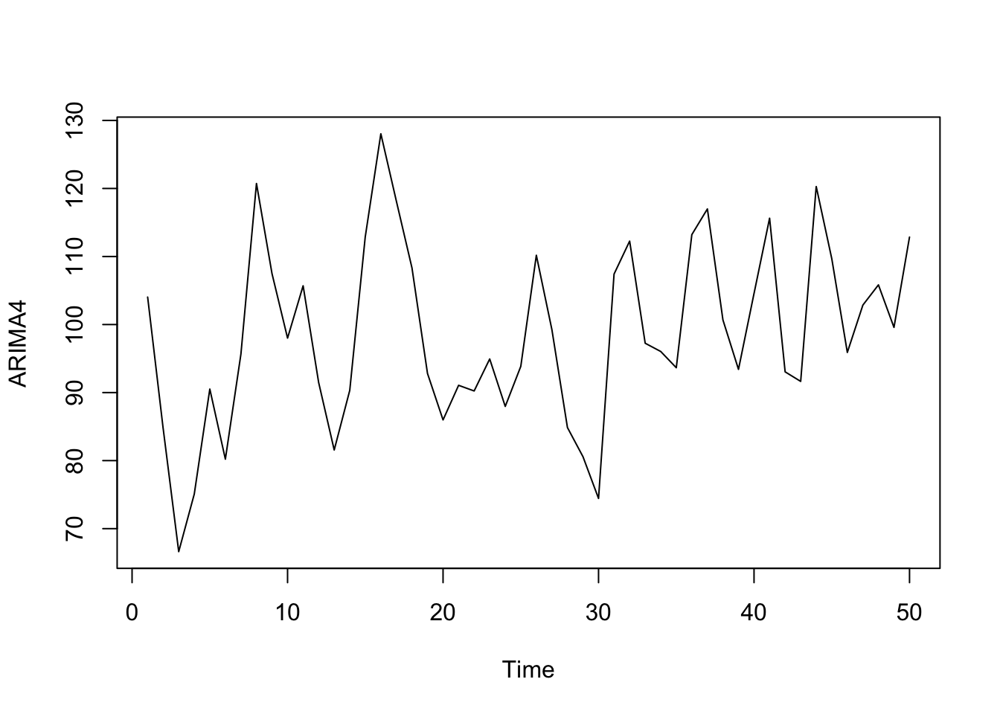
## Series: ARIMA4
## ARIMA(0,0,1) with non-zero mean
##
## Coefficients:
## ma1 mean
## 0.9053 99.0176
## s.e. 0.0664 2.5588
##
## sigma^2 estimated as 95.68: log likelihood=-184.81
## AIC=375.62 AICc=376.14 BIC=381.35Vi kan nu forudsige aktiekursen 12 perioder frem med predict:
## Time Series:
## Start = 51
## End = 62
## Frequency = 1
## [1] 113.64960 99.01756 99.01756 99.01756 99.01756 99.01756 99.01756
## [8] 99.01756 99.01756 99.01756 99.01756 99.01756Hvorfor svarer den forudsagte værdi til mean i en ren ARIMA(0,0,1) eller MA(1) model? (Vink hvad er definitionen på en residual)
7.5 Plots med forskellige modeller
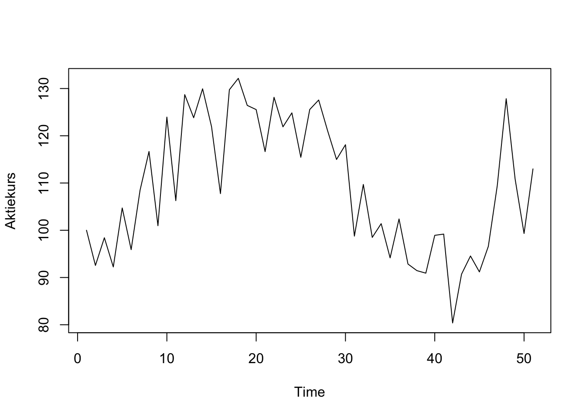
## Series: ap1
## ARIMA(1,1,0)
##
## Coefficients:
## ar1
## -0.4220
## s.e. 0.1272
##
## sigma^2 estimated as 90.98: log likelihood=-183.31
## AIC=370.61 AICc=370.87 BIC=374.44Kursen svinger omkring middelværdien.

## Series: ap2
## ARIMA(0,1,1)
##
## Coefficients:
## ma1
## 0.5003
## s.e. 0.1034
##
## sigma^2 estimated as 78.53: log likelihood=-179.67
## AIC=363.34 AICc=363.6 BIC=367.17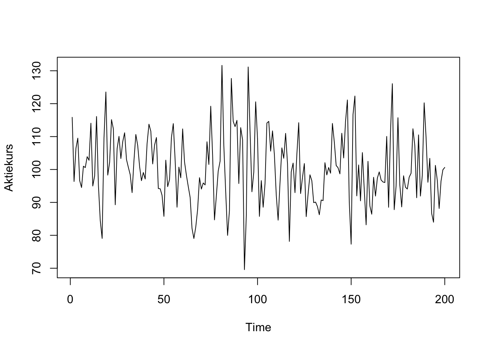
## Series: ap3
## ARIMA(2,0,1) with non-zero mean
##
## Coefficients:
## ar1 ar2 ma1 mean
## -0.4730 -0.0554 0.8756 99.5719
## s.e. 0.0851 0.0787 0.0473 0.8382
##
## sigma^2 estimated as 95.27: log likelihood=-737.81
## AIC=1485.63 AICc=1485.94 BIC=1502.12Vi kan også grafisk vise hvordan kursen vil udvikle sig med 80% og 95% konfidensbælter.
## Point Forecast Lo 80 Hi 80 Lo 95 Hi 95
## 201 93.74080 81.23228 106.2493 74.61067 112.8709
## 202 102.94879 89.46430 116.4333 82.32604 123.5715
## 203 98.29786 84.46716 112.1286 77.14562 119.4501
## 204 99.98730 86.10675 113.8679 78.75882 121.2158
## 205 99.44599 85.56008 113.3319 78.20933 120.6827
## 206 99.60839 85.72199 113.4948 78.37097 120.8458
## 207 99.56158 85.67514 113.4480 78.32409 120.7991
## 208 99.57472 85.68827 113.4612 78.33723 120.8122
## 209 99.57110 85.68465 113.4576 78.33361 120.8086
## 210 99.57209 85.68564 113.4585 78.33459 120.8096
7.6 ARIMA af højere orden
Arima modeller kan afhænge af flere tidligere perioder, fx kan ligningen for ARIMA(2,0,0) eller AR(2), opskrives som:
\[\hat{Y_t}=c + \phi Y_{t-1}+ \phi_2 Y_{t-2}\] Modellen afhænger altså af 2 tidligere perioder (lags) og ikke en. Man betegner dette som en model med lag 2.
Arima modeller kan indeholde flere forskellige elementer med lag som fx. ARIMA(0,2,1).
7.7 ARIMA og sæsonalitet
Hvis fx. en aktie handles lavere om fredagen kan ARIMA modellerne korrigere for dette ved sæsonkorrektion. I sæsonkorrigerede modeller vises dette som en ekstra vektor med 3 tal for hhv. sæsonkorrigeret AR eller SAR, sæsonkorrigeret I eller SI og sæsonkorrigeret MA eller SMA. En model som ARIMA(1,0,0)(1,0,0) har altså udover AR også en sæsonkomponent.
7.8 ARIMA eksempler
7.8.1 Traktorer
Hent følgende data for traktor salg, med følgende kommandoer i R.
data = read.csv('http://ucanalytics.com/blogs/wp-content/uploads/2015/06/Tractor-Sales.csv')
data = ts(data[,2],start = c(2003,1),frequency = 12)Vi ser salget er voksende over tid, der er ligeledes en sæsonkomponent.
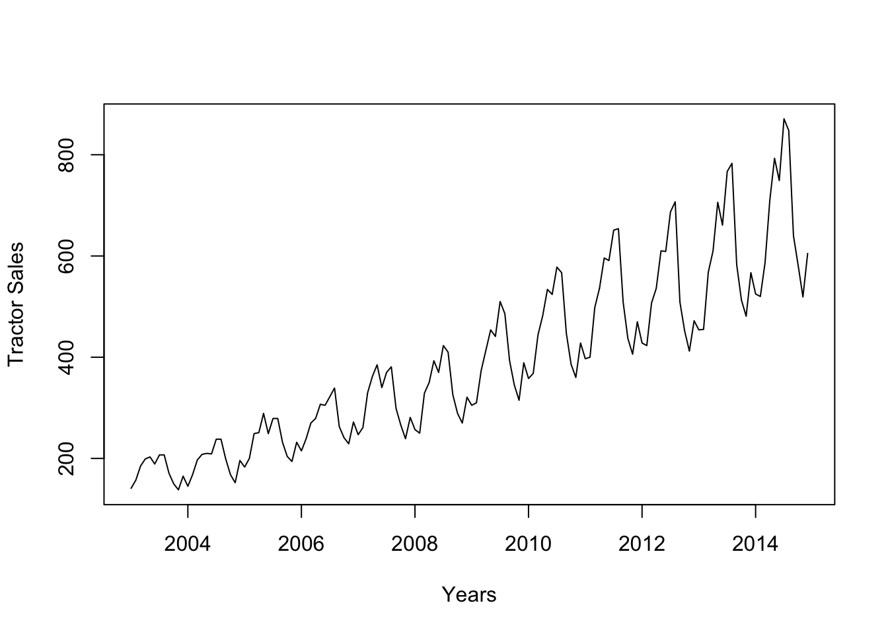
Differens tranformer data for at generere stationære data mht. middel (fjern trend)

log transformer data for at sikre stationaritet mht. varians.

Eventuel Differens og log transformation af data for at sikre stationaritet både mht. middel og varians.

Find bedste model med auto.arima, når der er stationaritet.
Akaike Information Criterion (AIC) , og Bayesian Information Criterion (BIC), vælg ARIMA modellen med mindst AIC and BIC værdier. auto.arima finder den bedste model automatisk.
## Series: log10(data)
## ARIMA(0,1,1)(0,1,1)[12]
##
## Coefficients:
## ma1 sma1
## -0.4047 -0.5529
## s.e. 0.0885 0.0734
##
## sigma^2 estimated as 0.0002571: log likelihood=354.4
## AIC=-702.79 AICc=-702.6 BIC=-694.17Nu kan vi forudsige kommende traktor salg med modellen
## Jan Feb Mar Apr May Jun Jul
## 2015 567.7645 566.4765 670.8226 758.9138 855.9482 817.2827 938.7239
## 2016 625.2464 623.8280 738.7384 835.7481 942.6065 900.0265 1033.7626
## 2017 688.5479 686.9859 813.5300 920.3613 1038.0383 991.1474 1138.4233
## Aug Sep Oct Nov Dec
## 2015 934.5120 703.5005 626.9879 571.9988 668.5363
## 2016 1029.1243 774.7246 690.4657 629.9094 736.2206
## 2017 1133.3154 853.1596 760.3701 693.6830 810.7573plot(data,type='l',xlim=c(2003,2018),ylim=c(1,1600),xlab = 'Year',ylab = 'Tractor Salg')
lines(10^(pred$pred),col='blue')
lines(10^(pred$pred+2*pred$se),col='orange')
lines(10^(pred$pred-2*pred$se),col='orange')
7.8.2 Detail debet card forbrug på Island (millioner ISK).
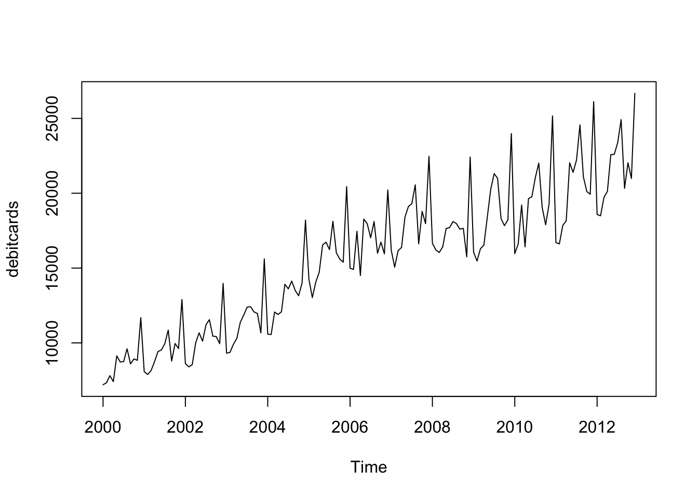
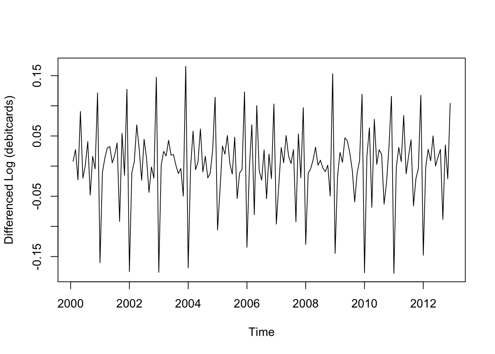
require(forecast)
ARIMAfit = auto.arima(log10(debitcards), approximation=FALSE,trace=FALSE)
ARIMAfit## Series: log10(debitcards)
## ARIMA(2,1,0)(0,1,1)[12]
##
## Coefficients:
## ar1 ar2 sma1
## -0.7167 -0.4372 -0.8352
## s.e. 0.0761 0.0763 0.1085
##
## sigma^2 estimated as 0.0004402: log likelihood=343.95
## AIC=-679.9 AICc=-679.61 BIC=-668.05Nu kan vi forudsige kommende debetkort omsætning med modellen
par(mfrow = c(1,1))
pred = predict(ARIMAfit, n.ahead = 36)
plot(debitcards,type='l',xlim=c(2000,2016),ylim=c(1,40000),xlab = 'Year',ylab = 'Debetcard usage')
lines(10^(pred$pred),col='blue')
lines(10^(pred$pred+2*pred$se),col='orange')
lines(10^(pred$pred-2*pred$se),col='orange')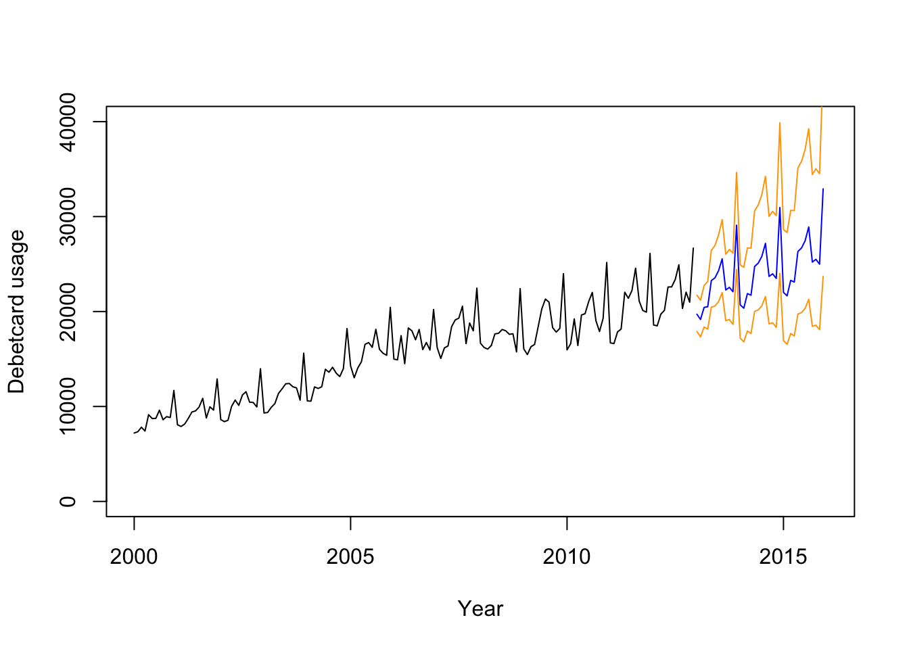
Forudsagt brug af debetkort bliver:
## Jan Feb Mar Apr May Jun Jul
## 2013 19717.77 19162.87 20436.29 20506.84 23262.14 23545.62 24292.86
## 2014 20701.39 20352.57 21886.85 21721.53 24745.18 25091.09 25806.49
## 2015 22017.60 21649.95 23281.85 23104.56 26321.98 26689.74 27450.29
## Aug Sep Oct Nov Dec
## 2013 25544.16 22267.47 22543.80 22081.63 29090.93
## 2014 27175.65 23697.15 23970.40 23490.36 30947.83
## 2015 28907.08 25206.87 25497.43 24986.92 32919.467.9 Forecast Aktiekurser
Man kan hente online aktiekurser med quantmod pakken installer denne med fx. pacman, vi skal også bruge pakken forecast som vi ligeledes henter. Vi henter nedenfor Google justeret lukkekurs til dato det er 6 søjle i GOOG matricen nedenfor. Vi kan se forecaste aktiekursen vha.
pacman::p_load(quantmod, forecast)
getSymbols("GOOG",from = "2017-01-01", to = Sys.Date(),getSymbols.warning4.0=FALSE)## [1] "GOOG"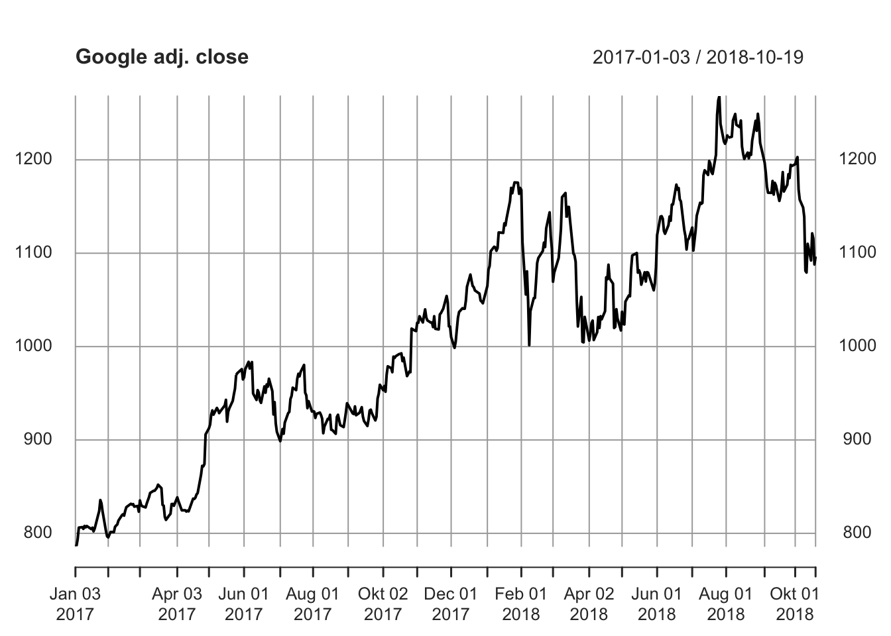
## Series: GOOG[, 6]
## ARIMA(0,1,1)
##
## Coefficients:
## ma1
## 0.0954
## s.e. 0.0491
##
## sigma^2 estimated as 181: log likelihood=-1795.58
## AIC=3595.16 AICc=3595.19 BIC=3603.36## Point Forecast Lo 80 Hi 80 Lo 95 Hi 95
## 449 1079.655 1062.415 1096.894 1053.2890 1106.020
## 450 1079.655 1054.085 1105.224 1040.5494 1118.760
## 451 1079.655 1047.868 1111.441 1031.0410 1128.268
## 452 1079.655 1042.682 1116.627 1023.1095 1136.200
## 453 1079.655 1038.138 1121.171 1016.1611 1143.148
## 454 1079.655 1034.046 1125.264 1009.9015 1149.408
## 455 1079.655 1030.291 1129.018 1004.1592 1155.150
## 456 1079.655 1026.802 1132.507 998.8237 1160.485
## 457 1079.655 1023.530 1135.779 993.8193 1165.490
## 458 1079.655 1020.438 1138.871 989.0910 1170.218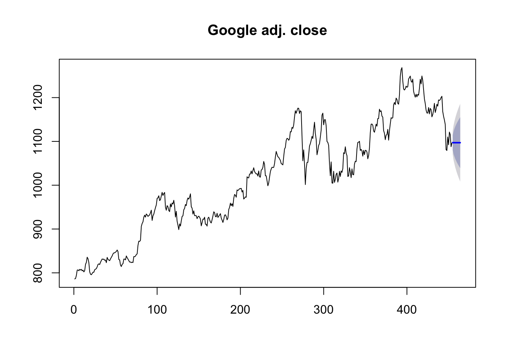
## [1] "GS"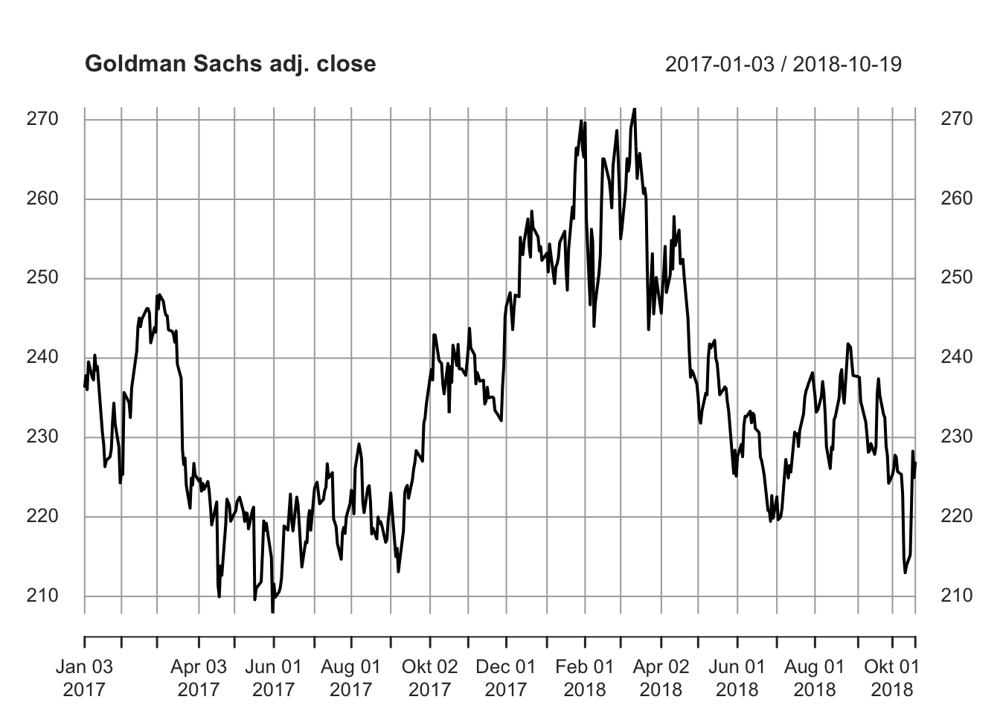
## Series: GS[, 6]
## ARIMA(0,1,0)
##
## sigma^2 estimated as 9.62: log likelihood=-1140.23
## AIC=2282.47 AICc=2282.48 BIC=2286.57## Point Forecast Lo 80 Hi 80 Lo 95 Hi 95
## 449 212.97 208.9951 216.9449 206.8909 219.0491
## 450 212.97 207.3486 218.5914 204.3729 221.5671
## 451 212.97 206.0853 219.8547 202.4407 223.4993
## 452 212.97 205.0202 220.9198 200.8118 225.1282
## 453 212.97 204.0819 221.8581 199.3768 226.5632
## 454 212.97 203.2335 222.7065 198.0793 227.8607
## 455 212.97 202.4534 223.4866 196.8863 229.0537
## 456 212.97 201.7273 224.2127 195.7758 230.1642
## 457 212.97 201.0453 224.8947 194.7327 231.2073
## 458 212.97 200.4003 225.5397 193.7463 232.1938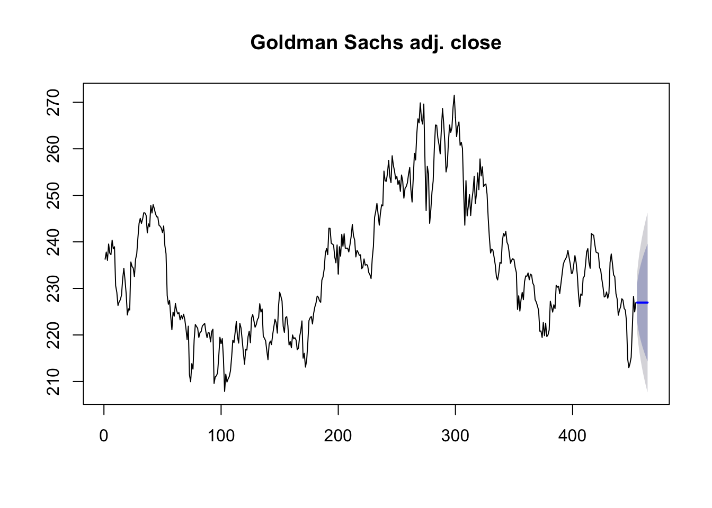
## [1] "DANSKE.CO"## Series: DANSKE.CO[, 6]
## ARIMA(0,2,1)
##
## Coefficients:
## ma1
## -0.9879
## s.e. 0.0067
##
## sigma^2 estimated as 6.928: log likelihood=-1038.71
## AIC=2081.42 AICc=2081.45 BIC=2089.62## Point Forecast Lo 80 Hi 80 Lo 95 Hi 95
## 447 143.8761 140.5029 147.2492 138.7172 149.0349
## 448 143.2521 138.4529 148.0514 135.9124 150.5919
## 449 142.6282 136.7150 148.5414 133.5847 151.6717
## 450 142.0043 135.1354 148.8732 131.4992 152.5094
## 451 141.3804 133.6548 149.1059 129.5652 153.1955
## 452 140.7564 132.2432 149.2696 127.7366 153.7763
## 453 140.1325 130.8827 149.3823 125.9862 154.2788
## 454 139.5086 129.5619 149.4553 124.2964 154.7208
## 455 138.8847 128.2726 149.4967 122.6549 155.1144
## 456 138.2607 127.0092 149.5122 121.0530 155.4684
## [1] "BRK-A"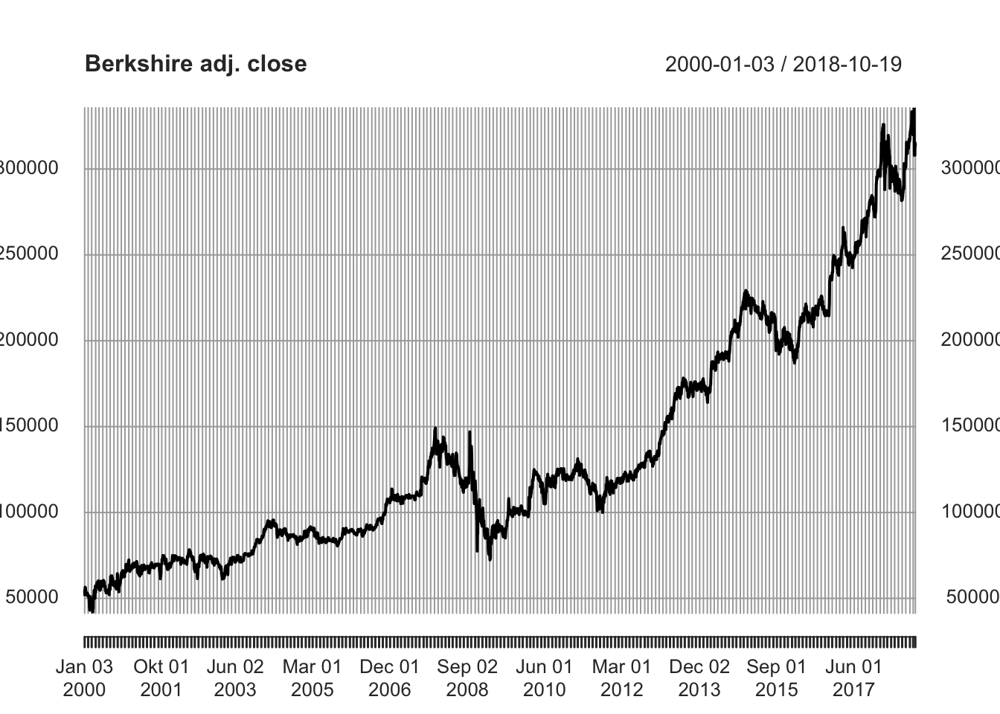
## Series: `BRK-A`[, 6]
## ARIMA(2,1,4) with drift
##
## Coefficients:
## ar1 ar2 ma1 ma2 ma3 ma4 drift
## 0.4799 -0.8132 -0.5140 0.7945 0.0107 -0.0807 55.4841
## s.e. 0.0521 0.0696 0.0534 0.0724 0.0181 0.0168 22.7099
##
## sigma^2 estimated as 2959631: log likelihood=-41894.76
## AIC=83805.52 AICc=83805.55 BIC=83857.21## Point Forecast Lo 80 Hi 80 Lo 95 Hi 95
## 4726 309004.2 306799.5 311208.9 305632.3 312376.0
## 4727 308873.1 305807.9 311938.4 304185.2 313561.1
## 4728 309253.0 305564.1 312941.9 303611.4 314894.7
## 4729 310562.8 306318.1 314807.5 304071.1 317054.5
## 4730 310956.4 306260.8 315651.9 303775.1 318137.6
## 4731 310154.0 305079.3 315228.8 302392.9 317915.2
## 4732 309522.9 304082.8 314963.0 301203.0 317842.9
## 4733 309946.6 304135.1 315758.1 301058.6 318834.5
## 4734 310737.1 304572.6 316901.6 301309.2 320164.9
## 4735 310845.9 304367.1 317324.7 300937.5 320754.3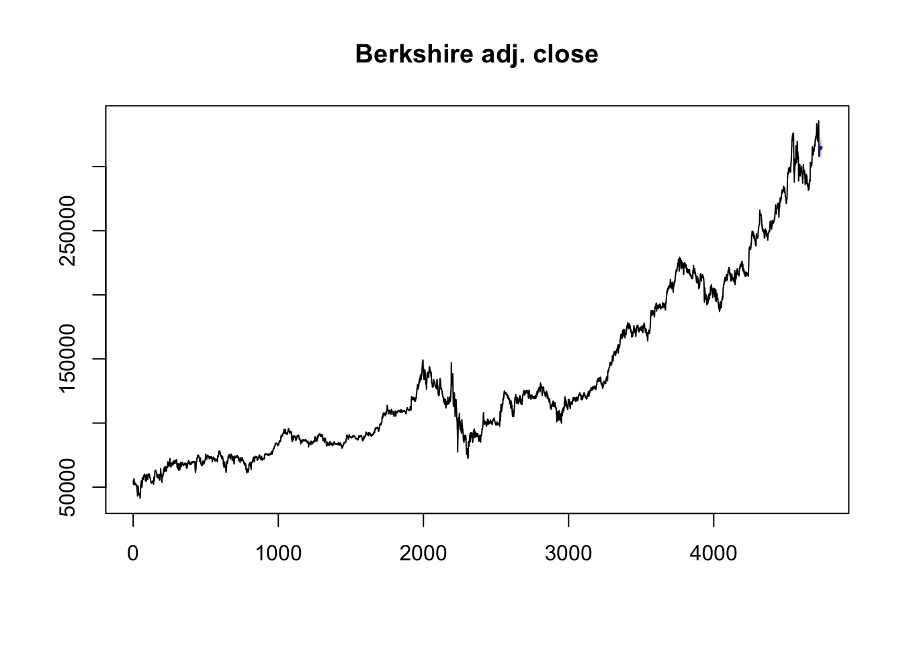
7.10 Aktieafkast
I Quantmod pakken ligger også mulighed for at beregne fx. dagligt, ugentligt afkast, dette gør vi vha. funktionen “periodReturn”.
## [1] "AAPL"apple <- periodReturn(`AAPL`,period='yearly',subset='2003::') # Årligt Afkast 2003 til i dag
plot(apple, main = "Apple årligt afkast siden 2007")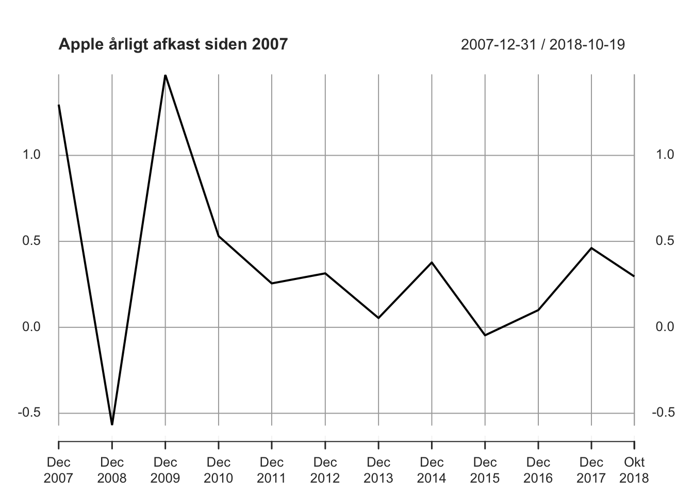
## Series: apple
## ARIMA(1,0,0) with non-zero mean
##
## Coefficients:
## ar1 mean
## -0.6013 0.3487
## s.e. 0.2493 0.0811
##
## sigma^2 estimated as 0.226: log likelihood=-7.23
## AIC=20.47 AICc=23.47 BIC=21.92## [1] "BRK-A"berkshire <- periodReturn(`BRK-A`,period='yearly',subset='2003::')
plot(berkshire, main = "Berkshire årligt afkast siden 2007")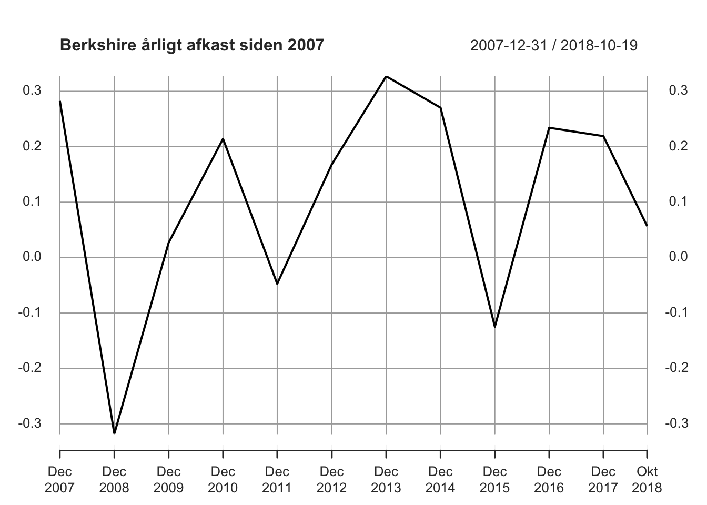
## Series: berkshire
## ARIMA(0,0,0) with non-zero mean
##
## Coefficients:
## mean
## 0.1073
## s.e. 0.0540
##
## sigma^2 estimated as 0.03814: log likelihood=3.09
## AIC=-2.19 AICc=-0.86 BIC=-1.22